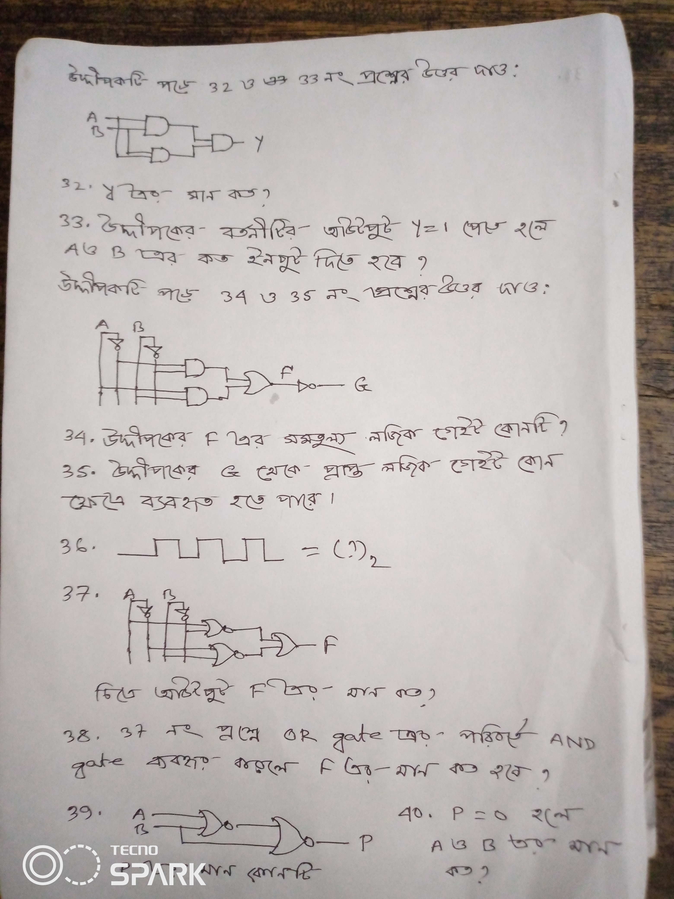

1. রূপান্তর:
যে কোন সমীকরন,সত্যক সারণী,লজিক সার্কিট একে অন্যের সাথে রূপান্তর কর |
2. উপরের 1 নং প্রশ্ন থেকে প্রাপ্ত সমীকরণকে NAND বা NOR গেইটের সাহায্যে বাস্তবায়ন কর|
3.দুটি হাফ এ্যডার যোগের মাধ্যমে একটি ফুল এ্যডার বাস্তবায়ন সম্ভব কিনা ব্যাখ্যা কর|
video
4.NAND ও NOR গেইটের সার্বজনীনতা প্রমাণ কর|
5.এনকোডার ও ডিকোডার ব্যাখ্যা কর|
6. সত্যক সারণীর সাহায্যে ডি-মরগ্যানের উপপাদ্য দুটি প্রমাণ কর |
7.নিম্নে উল্লেখিত ঘরে তিন চলকবিশিষ্ট NOR গেইটের বৈদ্যুতিক সার্কিট অংকন কর|
Now drawing:
click here
8.একটি ফ্লিপ ফ্লপ কয়টি বিট ধারন করতে পারে?
9.NOR এর আউটপুট 0 হবে যখন
a)সকল ইনপুট 0 হবে
b)সকল ইনপুট 1 হবে
c)।কোনটিই নয়
10.কোন বর্তনীর ক্ষেত্রে n সংখ্যক ইনপুটের জন্য 2n
সংখ্যক আউটপুট পাওয়া যায়?
11. কোন বর্তনীর ক্ষেত্রে 2 টি ইনপুটের জন্য 2টি
আউটপুট পাওয়া যায়?
12.কোন বর্তনীর ক্ষেত্রে 2nসংখ্যক ইনপুটের জন্য n
সংখ্যক আউটপুট পাওয়া যায়?
13.কোন বর্তনীর ক্ষেত্রে 2 এর অধিক ইনপুটের জন্য 2 টি
আউটপুট পাওয়া যায়?
14. কোন বর্তনীর ক্ষেত্রে 1 টি ইনপুটের জন্য 1
আউটপুট পাওয়া যায়?
15.XOR gate কয় ধরনের মৌলিক গেইট এর সমন্বয়ে গঠিত?
16. XOR gate কয়টি মৌলিক গেইট এর সমন্বয়ে গঠিত?
17.XNOR gate কয়টি মৌলিক গেইট এর সমন্বয়ে গঠিত?
18.1টি full adder কয়টি half adder নিয়ে গঠীত?
19. 1টি হাফ এ্যডার কয়টি মৌলিক গেইট এর সমন্বয়ে গঠিত.
XOR gate কয় ধরনের মৌলিক গেইট এর সমন্বয়ে গঠিত.
20.বাইনারি যোগের জন্য কোন বর্তনী ব্যবহার করা হয়?
21.A,B,C,D চলকবিশিষ্ট X-OR gate এর output এ 1 হলে input এ A="1", B="1",
হলে C ও D এর মান কত হবে?
22.উভয় input 1 হলে output 0 হয় কোন কোন গেইটের ক্ষেত্রে ?
23.
| A | B | X |
| 0 | 0 | 0 |
| 0 | 1 | 0 |
| 1 | 0 | 1 |
| 1 | 1 | 0 |
